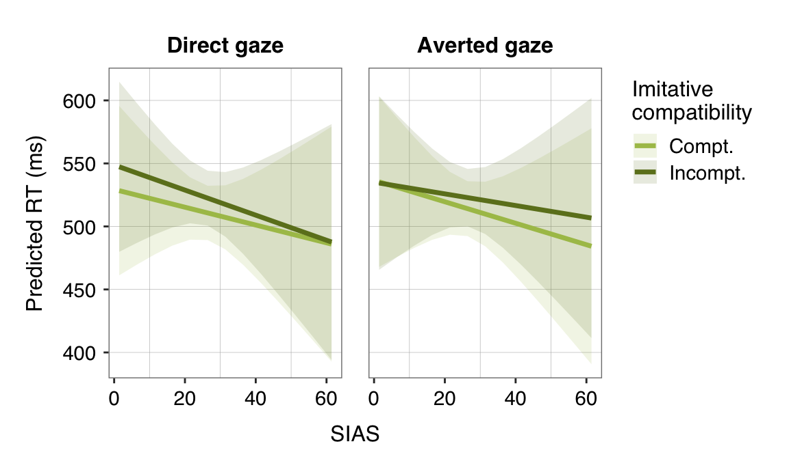

Main results
Besides the main effects of Imitative, Spatial and Gaze, the GLMM revealed a significant 3-way interaction between Imitative:Gaze:Ethnicity, which suggests that the influence of gaze on imitative compatibility is dependent on the ethnicity of the actor.
# run model
m.ethnic <- glmer(rt ~ imitative*gaze*stim_ethnicity + spatial*gaze*stim_ethnicity + (1|id) + (1|stimulus),
data=d.exploratory, family=inverse.gaussian(link='identity'),
control=glmerControl(optimizer='bobyqa', optCtrl=list(maxfun=2e5)))
summary(m.ethnic, corr=F)## Generalized linear mixed model fit by maximum likelihood (Laplace
## Approximation) [glmerMod]
## Family: inverse.gaussian ( identity )
## Formula:
## rt ~ imitative * gaze * stim_ethnicity + spatial * gaze * stim_ethnicity +
## (1 | id) + (1 | stimulus)
## Data: d.exploratory
## Control: glmerControl(optimizer = "bobyqa", optCtrl = list(maxfun = 2e+05))
##
## AIC BIC logLik deviance df.resid
## 163756.3 163869.6 -81863.2 163726.3 14032
##
## Scaled residuals:
## Min 1Q Median 3Q Max
## -3.3593 -0.6833 -0.0958 0.5784 5.3147
##
## Random effects:
## Groups Name Variance Std.Dev.
## stimulus (Intercept) 3.213e+01 5.668423
## id (Intercept) 6.210e+02 24.920488
## Residual 6.067e-05 0.007789
## Number of obs: 14047, groups: stimulus, 64; id, 60
##
## Fixed effects:
## Estimate Std. Error t value Pr(>|z|)
## (Intercept) 528.495 10.651 49.618 < 2e-16 ***
## imitative1 -10.298 1.345 -7.658 1.9e-14 ***
## gaze1 -4.647 1.356 -3.428 0.000609 ***
## stim_ethnicity1 1.021 2.683 0.381 0.703457
## spatial1 -22.285 1.351 -16.492 < 2e-16 ***
## imitative1:gaze1 -2.451 2.707 -0.905 0.365294
## imitative1:stim_ethnicity1 3.001 2.695 1.113 0.265521
## gaze1:stim_ethnicity1 4.014 2.680 1.497 0.134270
## gaze1:spatial1 5.058 2.598 1.947 0.051587 .
## stim_ethnicity1:spatial1 4.179 2.652 1.576 0.115137
## imitative1:gaze1:stim_ethnicity1 -13.722 5.073 -2.705 0.006835 **
## gaze1:stim_ethnicity1:spatial1 3.541 5.535 0.640 0.522366
## ---
## Signif. codes: 0 '***' 0.001 '**' 0.01 '*' 0.05 '.' 0.1 ' ' 1# MODEL DIAGNOSTICS
# residual plots to check linearity and homocedasticity
layout(matrix(c(1,1,2,3), 2, 2))
plot(fitted(m.ethnic), residuals(m.ethnic), main='', xlab='Fitted Values', ylab='Residuals', abline(h=0, lty=2))
hist(residuals(m.ethnic), main='', xlab='Residuals')
qqnorm(residuals(m.ethnic), main='')
layout(1)# INTERACTION ETHNICITY*GAZE*IMITATIVE
# ~~~~~~~~~~~~~~~~~~~~~~~~~~~~~~~~~~~~~
# means & confidence intervals (within-subject, method from Morey 2008)
descr.ethnic <- summarySEwithin(d.exploratory, measurevar='rt', betweenvars=NULL, withinvars=c('stim_ethnicity', 'gaze', 'imitative'), idvar=c('id'), na.rm=FALSE, conf.interval=0.95)
# figure
ggplot(descr.ethnic, aes(y=rt, x=gaze, fill=imitative)) +
# bar graphs with means and CI
geom_col(position=position_dodge()) +
geom_errorbar(aes(ymin=rt-ci, ymax=rt+ci), position=position_dodge(width=0.9), width=0.05, size=line_width-1) +
facet_grid(~stim_ethnicity, labeller=labeller(stim_ethnicity=ethnic_labels)) +
# format
scale_fill_manual(values=color_imitative, labels=compt_labels, name='Imitative\ncompatibility') +
coord_cartesian(ylim=c(460, 512)) +
scale_x_discrete(labels=gaze_labels) +
labs(title='', x='', y='Reaction times (ms)') +
my_theme
Social anxiety
To explore whether gaze effects on imitative and spatial compatibility are modulated by individual differences in social anxiety, we ran one GLMM for each of the three social anxiety questionnaires (SIAS, SPS and GARS). The general form of the models was:
Condensed form:
RT ~ Imitative*Gaze*Quest + Spatial*Gaze*Quest + (1|ID) + (1|Stimulus)Extended form:
RT ~ Imitative + Spatial + Quest + Gaze + Imitative:Gaze + Spatial:Gaze +Imitative:Quest + Spatial:Quest + Gaze:Quest + Imitative:Gaze:Quest +Spatial:Gaze:Quest + (1|ID) + (1|Stimulus)Questrefers to the scores of either the SIAS, SPS or GARS, respectively. Effect coding contrasts were set for all categorical predictors and continues predictors were mean-centered. An inverse gaussian distribution with identity link function was selected for this GLMM as we used RTs as dependent variable.SIAS
Main results
The GLMM revealed a significant 3-way interaction between
Imitative:Gaze:SIAS, which suggests that the influence of gaze on imitative compatibility varied as a function of social anxiety.
Follow-up tests
To follow-up the 3-way interaction, we tested the conditional effects of SIAS on imitative compatibility for direct gaze and averted gaze conditions separately.
Results from this GLMM indicated that the difference in RTs between imitatively incompatible and imitatively compatible trials (i.e. imitative effect) in averted gaze conditions increased as a function of social anxiety. Although descriptively the imitative effects following direct seemed to decrease with higher social anxiety symptoms, this effect did not reach statistical significance.
SPS
Main results
The GLMM revealed a significant 3-way interaction between
Imitative:Gaze:SPS, which suggests that the influence of gaze on imitative compatibility varied as a function of social anxiety.Follow-up tests
To follow-up the 3-way interaction, we tested the conditional effects of SPS on imitative compatibility for direct gaze and averted gaze conditions separately.
Results from this GLMM indicated that the difference in RTs between imitatively incompatible and imitatively compatible trials (i.e. imitative effect) in averted gaze conditions increased as a function of social anxiety. For direct gaze, the difference between the slopes of SIAS on imitative compatible and incompatible was not significant.
GARS
Main results
The GLMM revealed a significant 3-way interaction between
Imitative:Gaze:GARS, which suggests that the influence of gaze on imitative compatibility varied as a function of gaze anxiety.Follow-up tests
To follow-up the 3-way interaction, we tested the conditional effects of GARS on imitative compatibility for direct gaze and averted gaze conditions separately. The difference between the slopes of SIAS on imitative compatible and incompatible did not reach statistical significance for neither direct nor averted gaze.